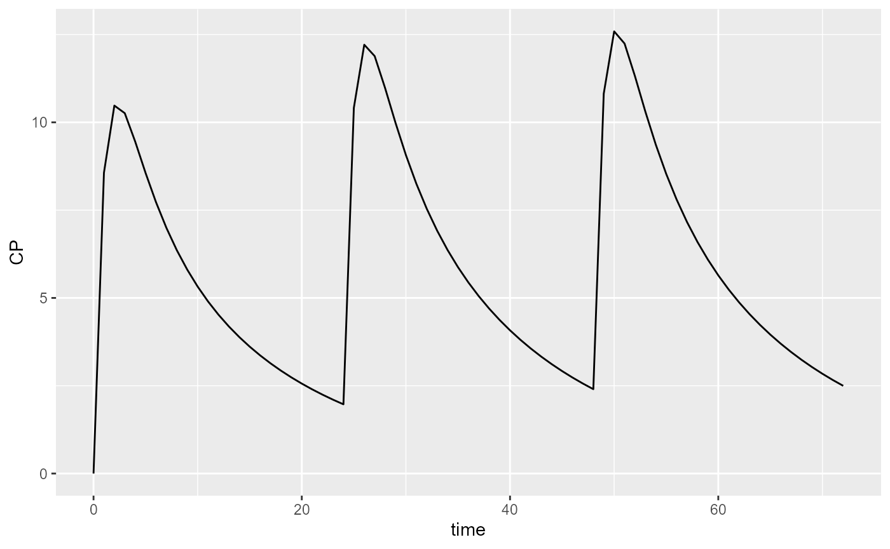
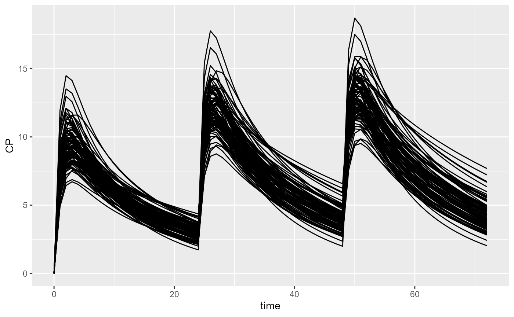
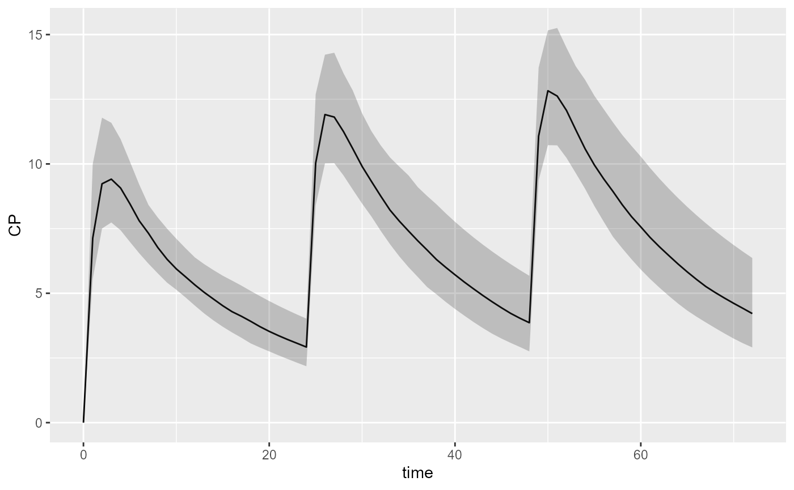
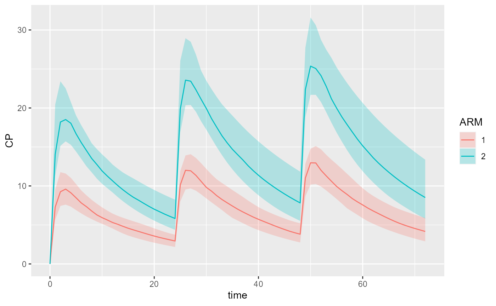

get_started.RmdA generic clinical trial simulation platform.
pmxmod must be installed beforehandRxODE or mrgsolve)Install the current development version:
remotes::install_github("Calvagone/pmxsim@dev")First import the pmxmod and pmxsim packages:
Load 2-compartment PK model from built-in model library:
model <- model_library$advan4_trans4Create your dataset using pmxsim. For instance, let’s give 1000mg QD for 3 days and observe every hour.
dataset <- Dataset()
dataset <- dataset %>% add(Bolus(time=0, amount=1000))
dataset <- dataset %>% add(Bolus(time=24, amount=1000))
dataset <- dataset %>% add(Bolus(time=48, amount=1000))
dataset <- dataset %>% add(Observations(times=seq(0,72, by=1)))See all methods that can be applied on a dataset:
## [1] add export getCovariateNames getIOVNames
## [5] length simulate
## see '?methods' for accessing help and source code
showMethods("add", classes=class(dataset))## Function: add (package pmxmod)
## object="dataset", x="arm"
## object="dataset", x="bolus"
## (inherited from: object="dataset", x="treatment_entry")
## object="dataset", x="covariate"
## object="dataset", x="dataset_config"
## object="dataset", x="observations"
## object="dataset", x="treatment_entry"
## object="dataset", x="treatment_iov"Simulate this very simple protocol:
## # A tibble: 6 x 17
## id time KA CL V2 V3 Q S2 ARM F CP OBS_CP Y
## <int> <dbl> <dbl> <dbl> <dbl> <dbl> <dbl> <dbl> <dbl> <dbl> <dbl> <dbl> <dbl>
## 1 1 0 1.05 6.43 70.1 20.6 3.62 70.1 0 0 0 0 0
## 2 1 1 1.05 6.43 70.1 20.6 3.62 70.1 0 8.56 8.56 8.22 8.22
## 3 1 2 1.05 6.43 70.1 20.6 3.62 70.1 0 10.5 10.5 12.5 12.5
## 4 1 3 1.05 6.43 70.1 20.6 3.62 70.1 0 10.3 10.3 10.5 10.5
## 5 1 4 1.05 6.43 70.1 20.6 3.62 70.1 0 9.45 9.45 9.64 9.64
## 6 1 5 1.05 6.43 70.1 20.6 3.62 70.1 0 8.56 8.56 10.5 10.5
## # ... with 4 more variables: A_DEPOT <dbl>, A_CENTRAL <dbl>,
## # A_PERIPHERAL <dbl>, A_OUTPUT <dbl>Plot these results:
spaguettiPlot(results, "CP")
Simulate more subjects:
dataset <- Dataset(subjects=100)
dataset <- dataset %>% add(Bolus(time=0, amount=1000))
dataset <- dataset %>% add(Bolus(time=24, amount=1000))
dataset <- dataset %>% add(Bolus(time=48, amount=1000))
dataset <- dataset %>% add(Observations(times=seq(0,72, by=1)))
results <- model %>% simulate(dataset, dest="RxODE", seed=1)
spaguettiPlot(results, "CP")
A shaded plot may also be used:
shadedPlot(results, "CP")
We could also simulate two different treatment arms. Say the first arm receives 1000mg QD and the second arm 2000mg QD.
arm1 <- Arm(id=1, subjects=50)
arm2 <- Arm(id=2, subjects=50)
arm1 <- arm1 %>% add(Bolus(time=0, amount=1000))
arm1 <- arm1 %>% add(Bolus(time=24, amount=1000))
arm1 <- arm1 %>% add(Bolus(time=48, amount=1000))
arm1 <- arm1 %>% add(Observations(times=seq(0,72, by=1)))
arm2 <- arm2 %>% add(Bolus(time=0, amount=2000))
arm2 <- arm2 %>% add(Bolus(time=24, amount=2000))
arm2 <- arm2 %>% add(Bolus(time=48, amount=2000))
arm2 <- arm2 %>% add(Observations(times=seq(0,72, by=1)))
dataset <- Dataset() %>% add(arm1) %>% add(arm2)
results <- model %>% simulate(dataset, dest="RxODE", seed=1)
shadedPlot(results, "CP", scenarios="ARM")